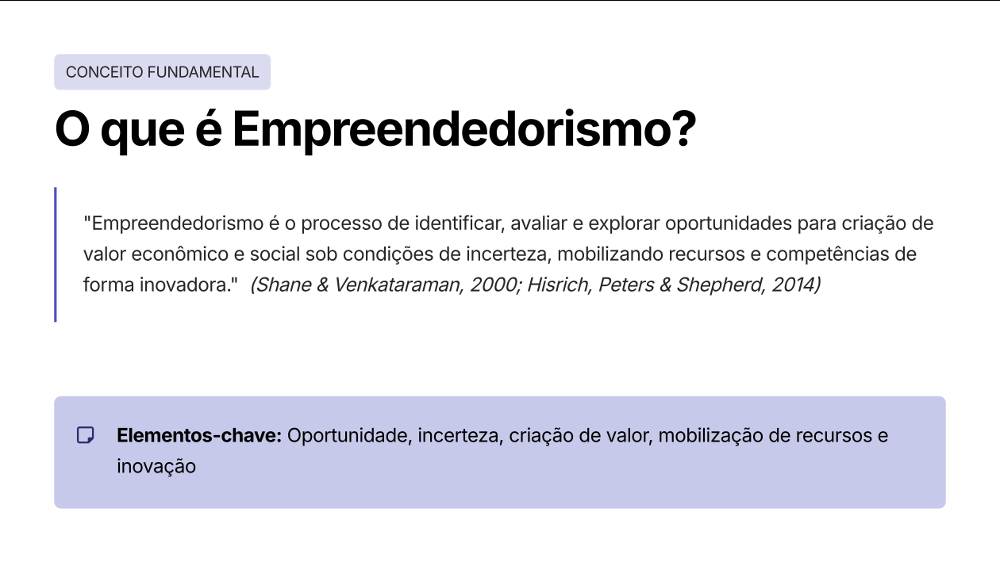
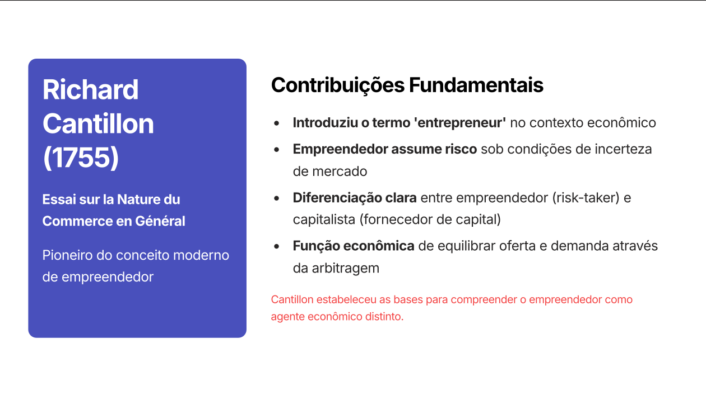
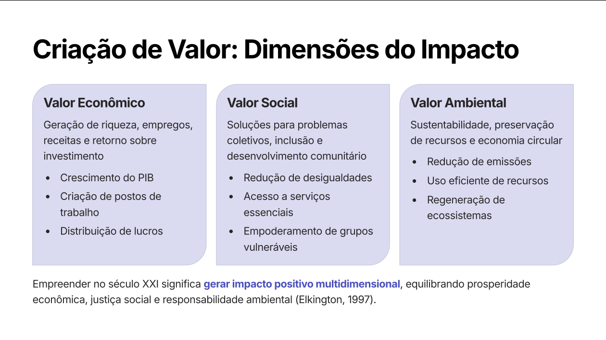
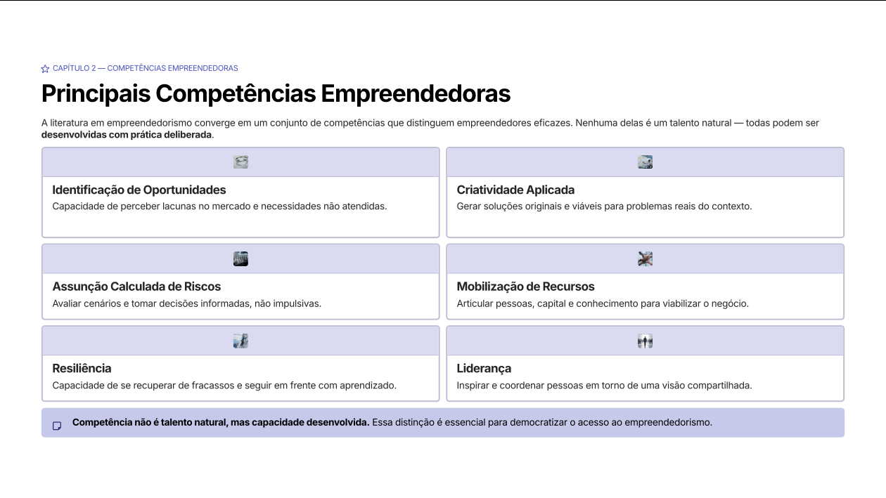
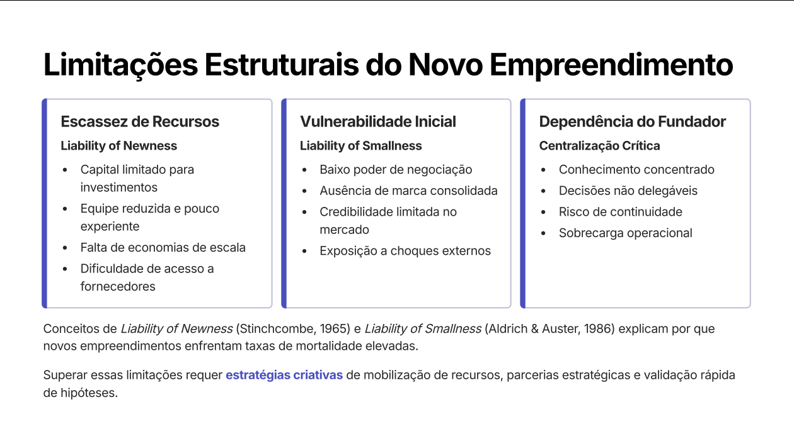

Antes de qualquer técnica ou ferramenta, empreender é um processo de criação de valor sob incerteza. Não é apenas "abrir empresa" — é mobilizar recursos para transformar oportunidades em resultados.
"Empreendedorismo é o processo de identificar, avaliar e explorar oportunidades para criação de valor econômico e social sob condições de incerteza, mobilizando recursos e competências de forma inovadora." — Shane & Venkataraman (2000); Hisrich et al. (2014).

Conceito-chave: oportunidade, incerteza, criação de valor, mobilização de recursos e inovação.
Elementos centrais
Oportunidade — algo a ser explorado.
Incerteza — o ambiente é imprevisível.
Criação de valor — econômico, social, ambiental.
Mobilização de recursos — pessoas, capital, conhecimento.
Inovação — fazer diferente ou fazer o novo.
Por que estudar?
Empreendedores são motor do desenvolvimento econômico e da criação de empregos, geram inovação (incremental e disruptiva), criam novos mercados, transformam socialmente e dinamizam economias regionais.
Dado GEM (2022): empreendedores iniciais representam 23,3% da população adulta brasileira. Empreender é um fenômeno de massa no país.
Três dimensões do valor
Valor
Geração
Econômico
Riqueza, empregos, receitas, retorno sobre investimento, crescimento do PIB
Social
Solução de problemas coletivos, inclusão, redução de desigualdades, empoderamento
Ambiental
Sustentabilidade, preservação de recursos, economia circular, regeneração
Triple Bottom Line (Elkington, 1997) — empreender no século XXI significa gerar impacto positivo nas três dimensões, equilibrando prosperidade econômica, justiça social e responsabilidade ambiental.
Capítulo 2
Evolução histórica do pensamento empreendedor
A figura do empreendedor não nasceu pronta. Sua definição mudou ao longo dos séculos — de comerciante de risco a inovador, e depois a gestor sistemático de oportunidades.

A evolução reflete a transição do foco no risco para a ênfase na inovação e na gestão sistemática.
AntiguidadeComerciantes e mercadores assumem riscos nas rotas comerciais.
1755Richard Cantillon — introduz o termo entrepreneur. Empreendedor = assumidor de risco sob incerteza. Distingue empreendedor (risk-taker) de capitalista (fornecedor de capital).
1803Jean-Baptiste Say — empreendedor como orquestrador: coordena capital, trabalho e terra. Conecta recursos escassos a demandas de mercado.
1934Joseph Schumpeter — empreendedor como agente da inovação e da destruição criativa. 5 tipos de inovação: produto, processo, mercado, insumos, organização.
1985Peter Drucker — empreendedorismo como disciplina gerencial: pode ser aprendido, é prática sistemática, busca proposital por mudanças e oportunidades.
Cantillon estabeleceu a base econômica. Say humanizou o papel (organização). Schumpeter introduziu a inovação como motor. Drucker democratizou: empreender é competência aprendível, não traço genético.
Capítulo 3
Escolas de pensamento
O campo do empreendedorismo se organiza em diferentes correntes teóricas — cada uma enfatizando um aspecto da figura empreendedora.
Escola
Foco
Autores
Econômica
Oportunidades, alocação de recursos, criação de valor econômico
Schumpeter, Kirzner
Comportamental
Características psicológicas e traços de personalidade do empreendedor
McClelland
Sociológica
Contexto social, redes e influências culturais
Weber, Granovetter
Austríaca
Empreendedor como descobridor de oportunidades em desequilíbrios de mercado
Kirzner, von Mises
Contemporâneas
Effectuation, lean startup, empreendedorismo social
Sarasvathy, Ries
Empreendedor: nasce ou se faz?
Durante muito tempo achou-se que era um dom inato. Pesquisa atual mostra: o comportamento empreendedor é construído por experiências, aprendizado e desenvolvimento contínuo. Mitos comuns a desfazer:
"Visionário genial" — não é capacidade mística de prever o futuro.
"Averso à estabilidade" — não é fuga da rotina, é tolerância à ambiguidade.
"Amante do risco" — empreendedor calcula riscos, não aposta cegamente.
"Líder nato" — liderança se constrói com prática.
Capítulo 4
Risco × Incerteza — a decisão empreendedora
A diferença entre risco e incerteza não é semântica — é a base da teoria empreendedora. Frank Knight (1921) cravou: risco é mensurável; incerteza não.

Baseado em Knight (1921), "Risk, Uncertainty and Profit".
Conceito
Definição
Exemplo
🎲 Risco
Probabilidades conhecidas e quantificáveis. Calculável, precificável, gerenciável estatisticamente.
Probabilidade de inadimplência com base em histórico de crédito
🌫️ Incerteza
Imprevisibilidade estrutural — sem dados históricos ou distribuições confiáveis.
Aceitação de um produto completamente novo no mercado
"Empreender é decidir e agir sob incerteza genuína, não meramente sob risco calculável."
Dimensões da decisão empreendedora
A decisão de empreender não é unidimensional. Envolve múltiplas esferas:
Cada etapa funciona como um filtro: muitas ideias surgem; poucas viram comprometimento.
Trade-offs empreendedores
Segurança × Autonomia — você ganha liberdade, perde previsibilidade.
Renda fixa × Potencial de crescimento — salário garantido vira possibilidade de ganhos altos (e risco de meses sem nada).
Estabilidade × Aprendizado acelerado — rotina conforto dá lugar a curva de aprendizado íngreme.
Não existe escolha sem custo. O empreendedor maduro reconhece os trade-offs e decide conscientemente.
Por que dizemos que empreender é decidir sob incerteza e não sob risco?
Porque o mercado, especialmente para produtos novos, raramente fornece dados históricos suficientes para calcular probabilidades. O empreendedor decide com informações incompletas e ambíguas — esta é a "incerteza genuína" de Knight. Risco é calculável; incerteza é imprevisível por natureza, mas isso não impede a ação — só exige aprendizado contínuo e ajuste.
Capítulo 5
Perfil × Competência empreendedora
Confundir perfil com competência é um erro estratégico. Perfil é estável; competência é construída. A boa notícia: competências podem ser desenvolvidas.
Perfil
Competência
Disposições individuais — traços de personalidade, valores, inclinações naturais
Capacidade mobilizável em situação real
Relativamente estável ao longo do tempo
Dinâmica, construída com formação e prática
Competência = Conhecimento + Habilidade + Atitude (saber teórico + saber fazer + querer agir e se comprometer).

Mindset empreendedor — cognitivo e comportamental, pode ser cultivado.
Características essenciais do espírito empreendedor
Iniciativa — agir proativamente sem esperar comandos.
Proatividade — antecipar problemas e oportunidades.
Autoconfiança — acreditar na capacidade de enfrentar desafios.
Tolerância ao risco — riscos calculados em busca de recompensas.
Aprendizagem com o erro — extrair lições do fracasso.
Competências empreendedoras para o sucesso
Competência
Conteúdo
Identificação de oportunidades
Reconhecer lacunas e necessidades não atendidas
Criatividade aplicada
Gerar soluções originais e viáveis
Assunção calculada de riscos
Avaliar cenários, decidir informado
Mobilização de recursos
Articular pessoas, capital e conhecimento
Planejamento estratégico
Objetivos, estratégias e planos de ação
Gestão financeira básica
Fluxo de caixa, preço, capital de giro
Liderança
Inspirar e dirigir equipes
Comunicação eficaz
Articular visão, negociar, construir relações
Resiliência
Recuperar-se de fracassos com aprendizado
Características identificadas por McClelland (1961), Timmons (1989) e pesquisa contemporânea sobre perfil empreendedor. Modelo de competências da UNCTAD (2012) consolidado por Dornelas (2008).
Capítulo 6
O processo empreendedor e o mindset
Empreender é uma jornada, não um evento. Pode ser dividido em etapas claras — cada uma com competências e desafios próprios.

Modelo baseado em Timmons (1994) e Hisrich et al. (2014).
As 6 etapas
Identificação da oportunidade — reconhecer lacunas e necessidades não atendidas.
Avaliação — analisar viabilidade técnica, comercial e financeira.
Planejamento — desenvolver modelo de negócios e plano de ação.
Captação de recursos — mobilizar capital, equipe e ativos.
Implementação — executar a estratégia, lançar produto/serviço.
Crescimento — escalar operações e consolidar posição.
Mindset empreendedor
Segundo Frederick & Kuratko (2010), o mindset empreendedor é uma combinação de disposições cognitivas e comportamentais que permite identificar e agir sobre oportunidades, mesmo em cenários de incerteza.
Dimensão
Descrição
Proatividade
Antecipar demandas e agir antes que o problema se torne urgente
Orientação para oportunidade
Enxergar possibilidades onde outros veem obstáculos
Tolerância à ambiguidade
Conforto em situações sem respostas claras
Ação sob incerteza
Decidir mesmo com informações incompletas
Intenção × Ação — o gap fatal
Muitos brasileiros querem empreender. Apenas uma fração executa. O que transforma intenção em ação?
Um evento gatilho (demissão, oportunidade inesperada).
Preparação prévia e planejamento.
Suporte de mentores e redes.
Redução percebida do risco (validação da ideia).
Elevação da autoeficácia via capacitação.
Capítulo 7
Trade-offs, fatores críticos e armadilhas
Empreendimentos novos enfrentam taxas de mortalidade elevadas. 60% das empresas fecham até o 5º ano (SEBRAE, 2020). Reconhecer os fatores críticos é metade da batalha.
Fatores críticos de sucesso
Fator
O que significa
Proposta de valor clara
Diferenciação que resolve problema real
Conhecimento profundo do cliente
Dores, necessidades, disposição a pagar
Gestão disciplinada
Controles financeiros, processos definidos
Capacidade de adaptação
Pivotar, aprender com feedback, ajustar
Armadilhas comuns do empreendedor iniciante
Excesso de otimismo — subestimar desafios, superestimar receitas.
Falta de planejamento — iniciar sem modelo validado nem projeções.
Subestimação da concorrência — ignorar competidores e substitutos.
Falta de capital de giro — não provisionar para o ciclo operacional, gerando crise de liquidez.
Limitações estruturais (por que novos empreendimentos sofrem)
Liability of Newness (Stinchcombe, 1965): falta de experiência, capital, marca. Liability of Smallness (Aldrich & Auster, 1986): baixo poder de negociação, credibilidade limitada. Dependência do fundador: conhecimento centralizado, decisões não delegáveis.
Superar isso requer mobilização criativa de recursos, parcerias estratégicas e validação rápida de hipóteses.
Por que afirmar que o empreendedor pode ser "formado" e não apenas "nasce" muda nossa abordagem?
Porque democratiza o acesso ao empreendedorismo. Se fosse traço inato, só "os escolhidos" empreenderiam. A visão de Drucker — empreendedorismo como disciplina aprendível — abre o caminho para educação, treinamento, mentoria e métodos sistemáticos (lean, effectuation). Competências como reconhecimento de oportunidades, gestão financeira e liderança podem ser deliberadamente desenvolvidas.
Pronto para o quiz?
Banco com temas, dificuldade variável e modo "focar nos erros".